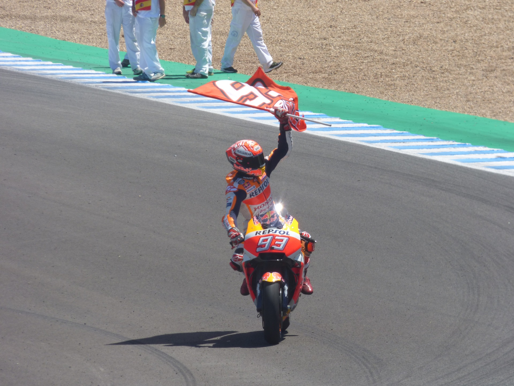

MARC MARQUEZ!
Dades Personlas
Altres noms
El Tro de Cervera
Alçada
1,69 m
Naixement
17 febrer 1993 Modifica el valor a Wikidata (29 anys)
Activitat
Ocupació
motociclista
Número esportiu
93
Patrocinador
Red Bull i Repsol
2019

Durant la temporada 2019, Márquez va demostrar un domini aclaparador, quedant en primera o segona posició durant totes les curses excepte a Texas, on va caure quan liderava la cursa amb avantatge. A falta de 5 carreres, Márquez avançava en 98 punts el seu perseguidor més immediat (Dovizioso) quedant 125 punts per disputar-se, per la qual cosa només necessitava treure dos punts més que l'italià per aconseguir el títol. Marc va aprofitar la seva primera ocasió, al Gran Premi de Tailàndia, on va superar Fabio Quartararo a l'últim revolt per collir una nova victòria que li permetia alçar-se amb el seu sisè entorxat de MotoGP, sent el seu quart títol consecutiu i el vuitè de la seva carrera, cosa que el situa a un títol de Valentino Rossi ia dos de Giacomo d'Agostino a la classificació històrica de campionats a la categoria reina. En aquesta campanya va batre el rècord de podis en una sola temporada, 18, i el rècord de punts, 420.28 Aquesta enorme quantitat de punts, juntament amb els 28 sumats per Jorge Lorenzo i els 10 aportats per Stefan Bradl, van permetre a Honda HRC conquistar també el campionat per equips.
2020
La temporada 2020 no va començar bé per al pilot espanyol, ja que a la primera cursa disputada al Circuit de Jerez el 19 de juliol va patir una caiguda en què es va fracturar l'húmer.29 Aquesta caiguda va ocasionar que es perdés la segona cursa, la qual també va ser a Jerez i la disputada al Circuit de Brno després d'haver de passar per quiròfan per segona vegada.30 Finalment Honda i Marc Márquez van fer oficial que aquest tornaria a córrer el 2021, per la qual cosa Marc es va perdre la resta de curses de la temporada 2020. La temporada 2020 va durar només 4 mesos a causa dels canvis produïts per culpa de la pandèmia de COVID -19.
2021

A la temporada 2021 Marc Márquez va aconseguir reincorporar-se al motociclisme a l'abril al GP de Portugal després de l'accident que va patir al GP de Jerez 2020, pel qual no va poder competir en moltes carreres. Va tenir una victòria al GP d'Alemanya, que va tenir lloc al Circuit de Sachsenring després de 581 dies sense guanyar una carrera, com anècdota és la seva primera victòria a la dècada 2020, a més el 12 de setembre es va pujar per segona vegada al podi al acabar segon el GP d'Aragó després de perdre una dura batalla amb Francesco Bagnaia (guanyador d'aquest premi) en què tots dos s'avançaven mútuament reiterades vegades. El 3 d'octubre torna a tenir una victòria -que és la segona el 2021, i alhora es puja per tercera vegada al podi aquest mateix any, també es van pujar amb ell al podi Fabio Quartararo i Francesco Bagnia- al GP de les Amèriques celebrat a Austin, Texas. El 24 d'octubre torna a guanyar i alhora pujar al podi al Circuit de Misano Marco Simoncelli, coincidint amb la proclamació de Fabio Quartararo com a campió de MotoGP del 2021. També va tenir diverses caigudes, una d'elles li va afectar un ull.